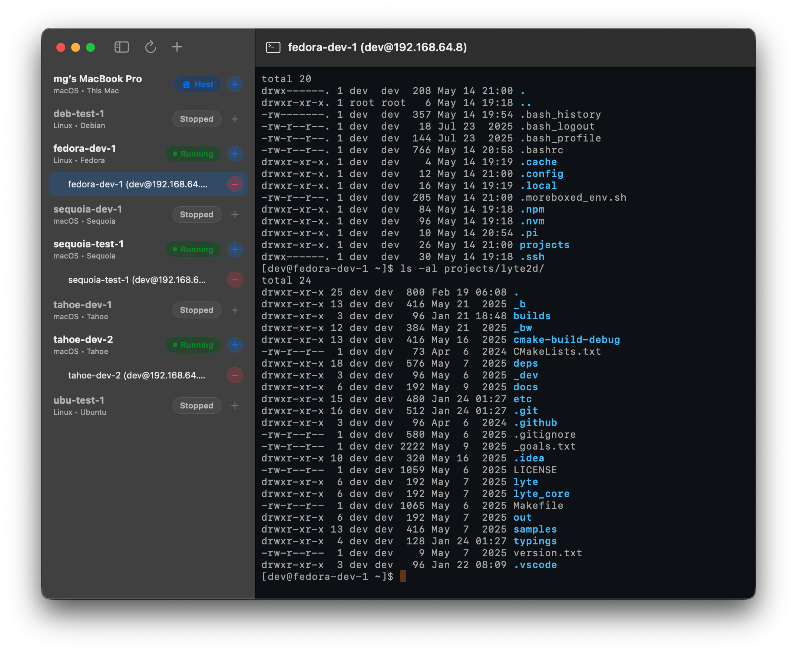
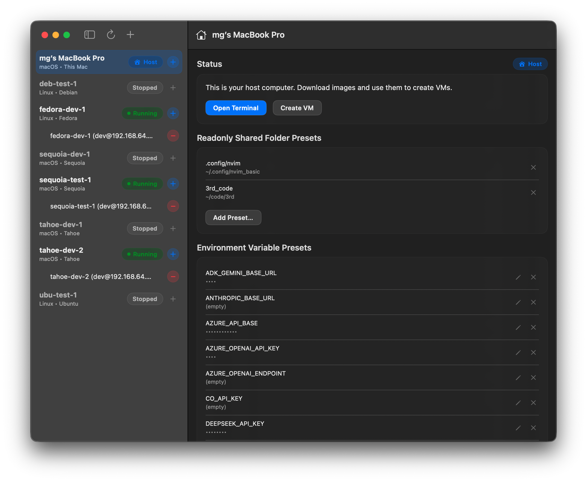
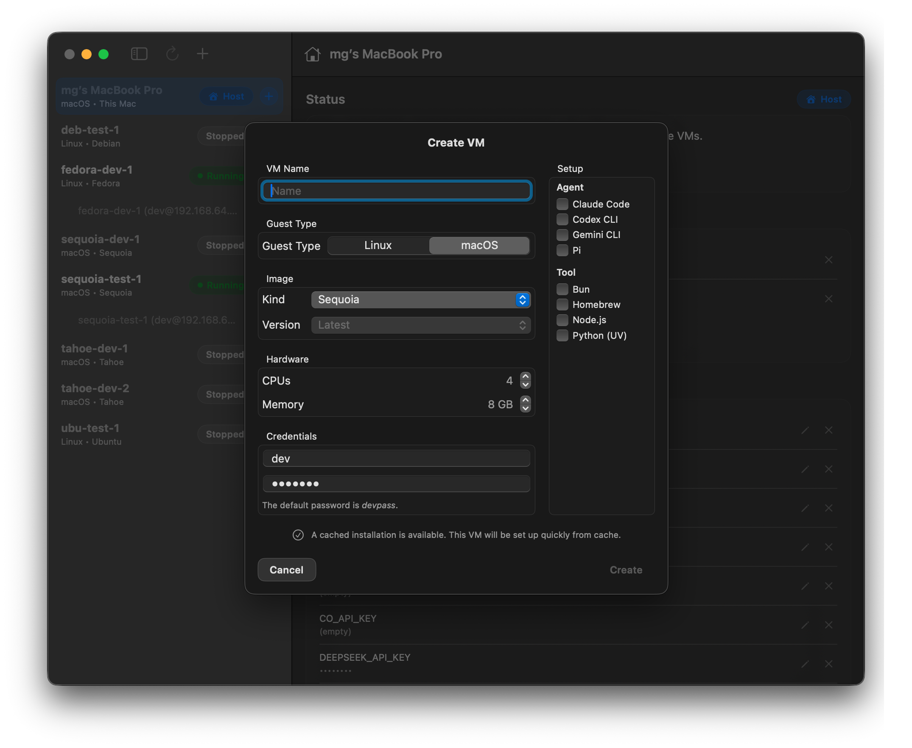
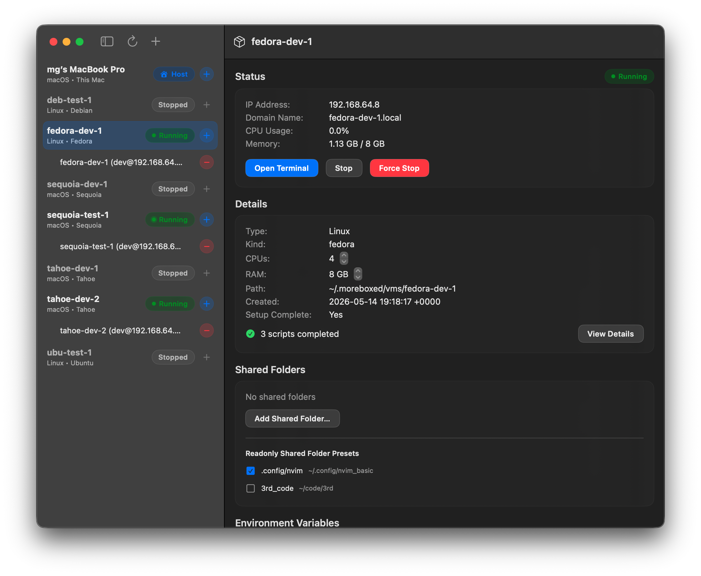
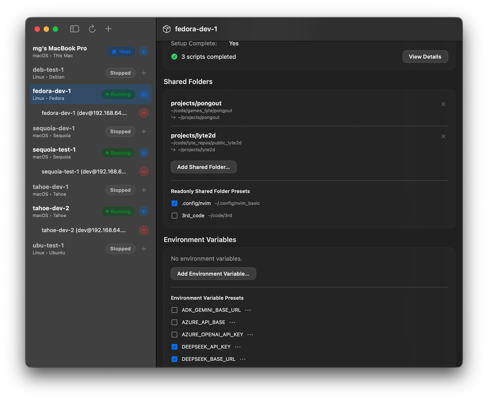
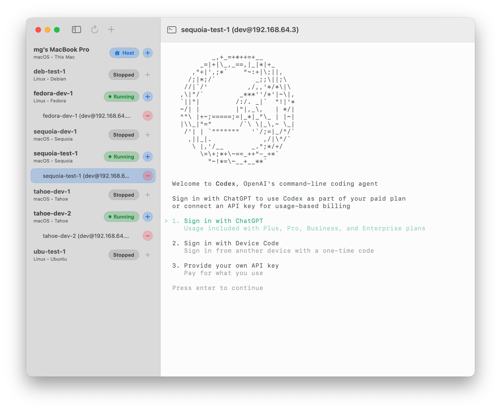
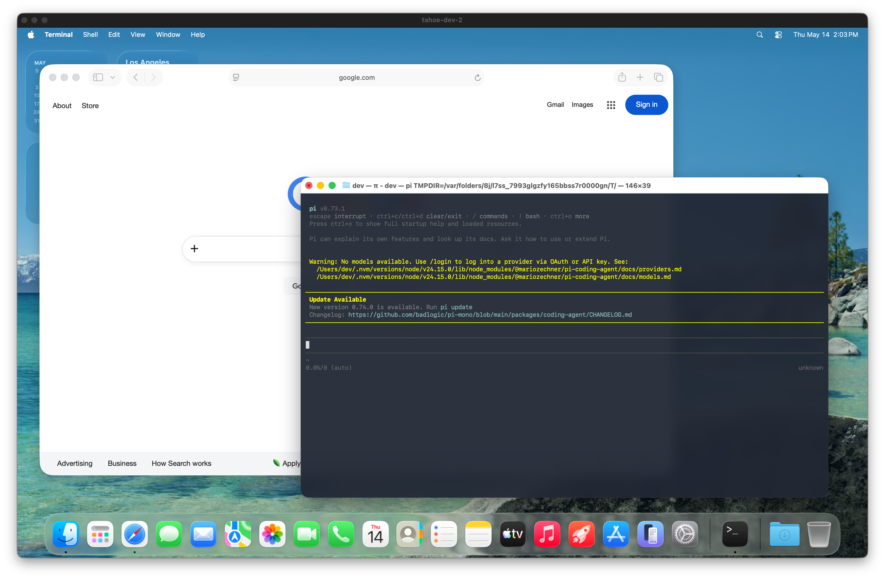

Welcome to our beta
What is it?
Moreboxed is a macOS app providing local virtual machines optimized and streamlined for AI agent use.
We believe running AI agents directly on your computers is a real risk. These agents can and sometimes do install random stuff, view your private information (which ends up in someone lab's training data) and more. We believe running them in an appropriate sandbox is crucial.
It's made by Murat (@morew4rd on X, github and gmail) and Nic (@z0rbn on X, @Zorbn on github) to scratch our own itch. Hopefully it helps you too.

TL;DR
We handle everything (image downloads, VM creation and unattended setup, SSH key generation and deployment, local DNS, and optionally agent installation) to bring you local Mac and Linux VMS. Once installed, quickly open an SSH connection with a single click using the built-in terminal. Or start a Mac VM in GUI mode for desktop agents. Enable shared folders (optionally readonly), setup environment variables and more.
Private Beta
Thank you for joining our beta! Please pick either download the zip (just unzip and move it to your Applications folder) or use homebrew installation method. App is properly codesigned and notarized by Apple.
- Download zip: loading…
- Homebrew installation:
brew tap moreboxed/tap brew install moreboxed
- Please join our discord: https://discord.gg/TtBBEmu894
- You can report bugs on https://github.com/moreboxed/issues
VMs and connectivity
- Linux VMs — Ubuntu, Debian, Fedora, and others via cloud-init images. Automatic disk resizing, user creation, and SSH key setup.
- macOS VMs — Uses Apple's restore images (IPSWs). Full unattended setup automation on first boot, with optional cache acceleration for subsequent VMs using the same image and credentials.
- One-click SSH terminal (integrated SwiftTerm)
Shared folders, env vars
- Per-VM shared folders with read/write or read-only access
- Shared folder presets (save a host path once, attach to any VM)
- Per-VM environment variables
- Environment variable presets (apply common env vars to any VM)
- Agent and tooling setup scripts that run automatically after VM creation
Images
- Built-in image browser and downloader for Linux cloud images
- macOS IPSW download and management
- Download progress tracking with stall detection
- Image deletion
macOS cache
After a macOS VM completes its first full installation, the resulting disk state is cached by default. Creating another VM with the same OS, version, and username will restore from cache instead of re-running the 12–15 minute installation.
Caches are listed in the GUI with size and creation date, and can be deleted individually.
System requirements
- Apple Silicon
- 8 GB RAM. 16 GB recommended.
- 30+ GB free space
- macOS 14.0 or later. Sequoia or Tahoe recommended.
Screenshots





